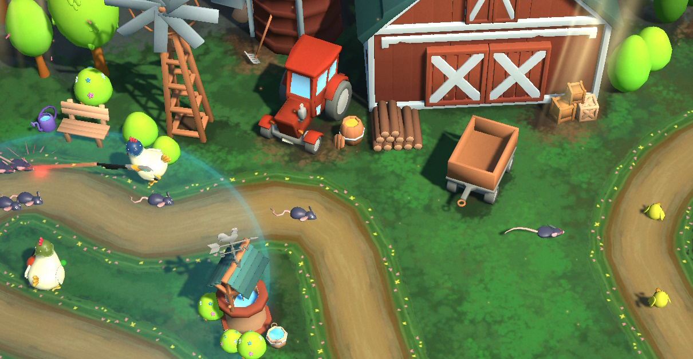
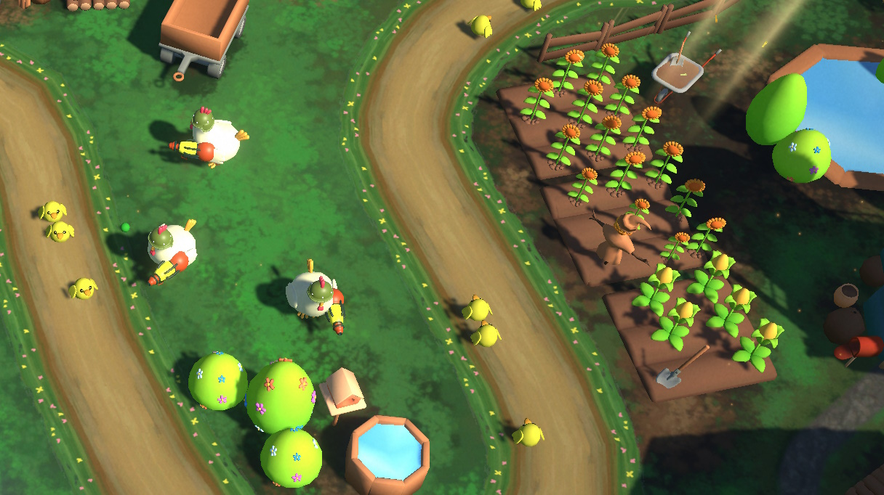
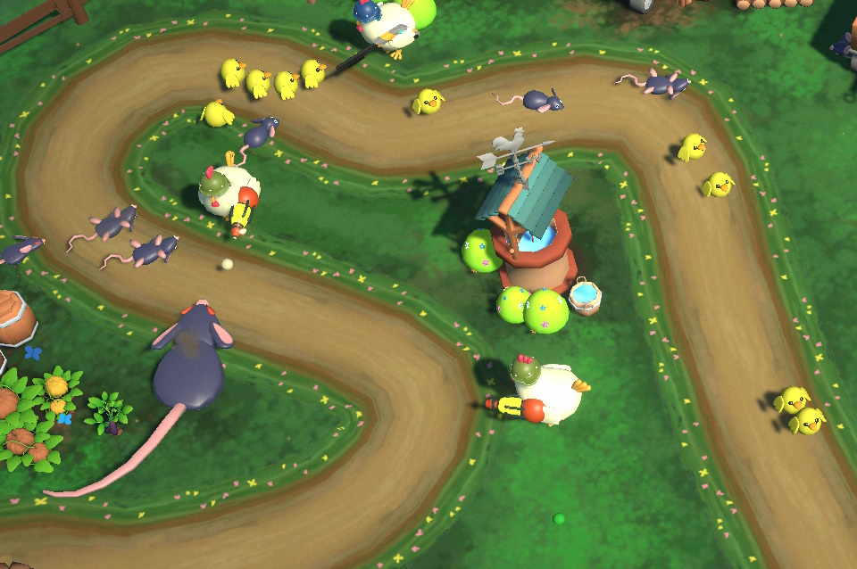

Fowl Play
A unique tower defence game created in less than 2 weeks with some coworkers for a gamejam. I did the majority of the programming for the project. The itch.io page can be found Here.
Working with wonderful artist Oliver Hopley, who did the environment design, art and significant programming for this project, and several other coworkers, we created an inverse tower defence, where you must use towers to defend a convoy of cute little chicks.
2 types of rats will try to attack the chicks during their journey. The player can buy and use 5 different towers to defend their chicks while they travel to the coop.
The player can sell the rat corpses for cash.

This is the wonderful team that contributed to the game:
• Oliver Hopley
• Evelyn Moore
• Jonathan Lam
• Will Tarratt
• Matthew Drozario